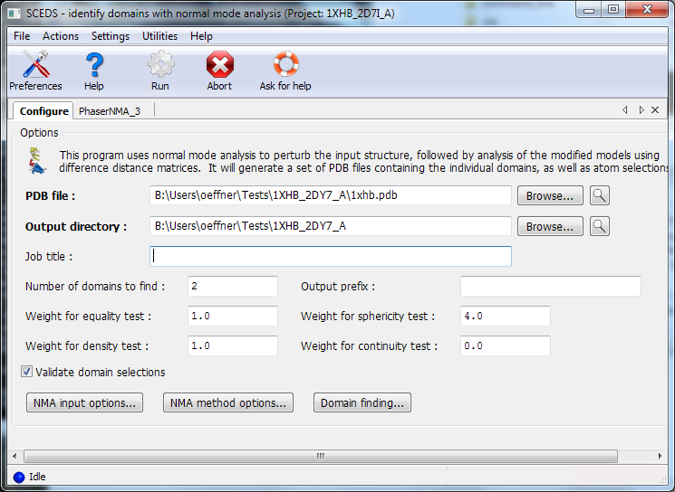
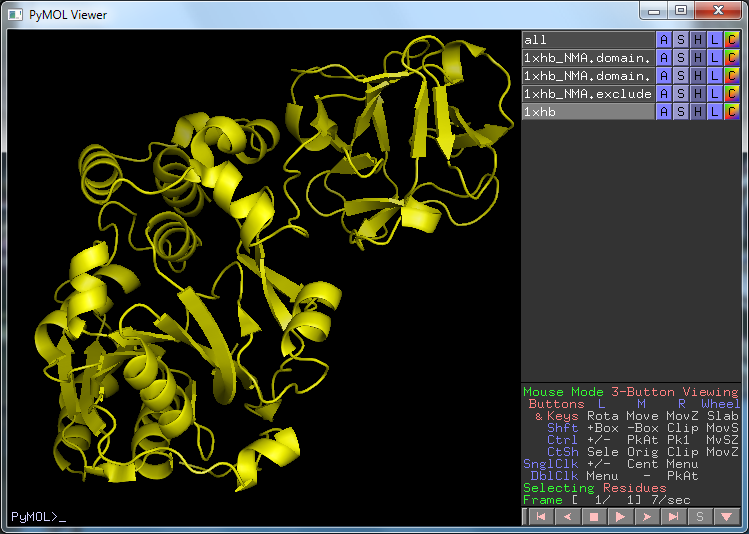
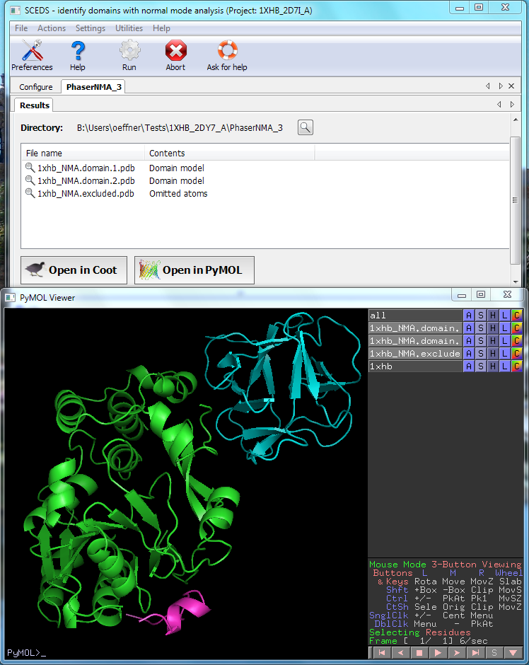

Description
SCEDS is useful for identifying domains in a model to be used by molecular replacement when it is anticipated that there may be conformational motion of one or more domains relative to the domains in the target structure. Typically in such cases MR underperforms as it is not possible to match both domains onto the target structure. By partitioning a multidomain structure into distinct domains it is then possible to do MR searches with each separate domain and achieve a clearer solution than would otherwise have been possible. Domains are identified with a normal mode analysis. See literature reference below.
To use SCEDS supply it with the MR model and execute it. Depending on the size of the model it may take some time before it completes.

Output is one or more domains each saved into separate pdb files. These can then be used in molecular replacement. It is good practice to inspect the identified domains in a graphical viewer such as Coot or Pymol.

The structure with PDB id 1XHB before running SCEDS. Two distinct domains can be discerned in the structure.

After running SCEDS the two domains have been identified and saved into separate pdb files.
SCEDS: protein fragments for molecular replacement in Phaser McCoy AJ, Nicholls RA, Schneider TR Acta Cryst. D69, 2216-2225 (2013)